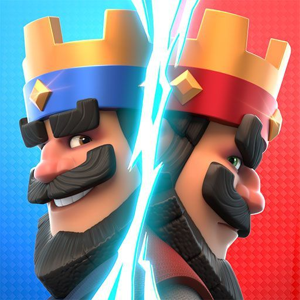

LAS MEJORES CARTAS DE CLASH ROYAL
Clash Royale es un fenómeno de la estrategia en tiempo real que combina el coleccionismo de cartas con la defensa de torres. El objetivo es simple pero profundo: destruir las torres del enemigo usando un mazo de 8 cartas mientras defiendes las tuyas. La verdadera maestría reside en la Gestión de Elixir; cada carta tiene un coste y lanzarla en el momento equivocado puede dejarte indefenso ante un contraataque. Con la llegada de las Evoluciones, el juego ha mutado: ahora ciertas unidades pueden transformarse en versiones superpoderosas tras un par de ciclos, cambiando las reglas del combate a mitad de partida.
Dominando el Tablero
Para ganar, no necesitas las cartas con más daño, sino las que tengan mejor sinergia. Una carta de "Tanque" como el Caballero sirve para absorber el castigo mientras una unidad de daño a distancia, como la Mosquetera, limpia el camino. Aprender qué cartas mejorar al nivel 15 es vital para sobrevivir en las ligas superiores.
Estratega de Mazo

| UNIDAD TÁCTICA | DESCRIPCIÓN Y UTILIDAD ESTRATÉGICA |
|---|---|
| EL CABALLERO EVO | Es considerada la carta más segura para mejorar en todo el juego debido a su nula probabilidad de ser arruinada por nerfeos. Funciona como un tanque de bajo coste (3 de elixir) que puede detener desde un Mega Caballero hasta un Chispitas si se posiciona bien. Su evolución lo convierte en el muro defensivo perfecto para casi cualquier mazo meta. |
| LA MOSQUETERA EVO | La reina de la defensa aérea y el control de carril. Ignacio la recomienda como la primera opción para subir al nivel 15 por su capacidad de eliminar tanques y tropas aéreas desde una distancia segura. Su evolución le permite resistir hechizos fuertes como la Bola de Fuego, haciendo que sea una pesadilla para el rival eliminarla de la arena. |
| MONTAPUERCOS | La condición de victoria (Win Condition) más persistente en la historia de Clash Royale. Es una unidad extremadamente rápida que solo ataca estructuras; su fuerza reside en que, incluso si el rival lo defiende, casi siempre logra conectar un golpe o forzar un gasto excesivo de elixir al oponente. |
| LA VALQUIRIA EVO | Ideal para limpiar grandes hordas terrestres gracias a su ataque de área en 360 grados. Con su evolución, adquiere una mecánica asquerosa para el rival: atrae a las tropas hacia ella mientras gira, lo que permite defender contra ataques masivos simplemente tirándola en medio del "push" enemigo. |
| EL TRONCO | Por solo 2 de elixir, es el hechizo defensivo más rentable. Es el counter directo del Barril de Duendes y esencial para ganar tiempo empujando hacia atrás a las tropas enemigas. Tenerlo al nivel 15 asegura que puedas eliminar unidades pequeñas de un solo golpe, lo que genera intercambios de elixir muy positivos. |